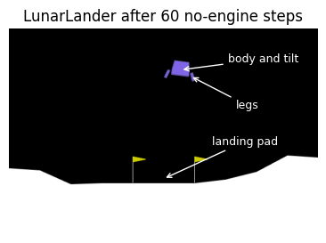

Code
import os,json,time
from pathlib import Path
os.environ.setdefault('SDL_VIDEODRIVER','dummy')
os.environ.setdefault('SDL_AUDIODRIVER','dummy')
import numpy as np
import matplotlib.pyplot as plt
import gymnasium as gym
import torch
from torch import nn
torch.set_num_threads(2)
ROOT=Path.cwd(); OUT=ROOT/'classroom_results';OUT.mkdir(exist_ok=True)
FIG=ROOT/'figures';FIG.mkdir(exist_ok=True)
started=time.perf_counter()
print('Gymnasium',gym.__version__,'; PyTorch',torch.__version__)
def save_plot(fig,name):
for ext in ['pdf','png']:fig.savefig(FIG/(name+'.'+ext),bbox_inches='tight',dpi=160)
ENV='LunarLander-v3'
env=gym.make(ENV,render_mode='rgb_array',continuous=False,enable_wind=False)
initial,_=env.reset(seed=620)
for screenshot_step in range(60):
screenshot_observation,_,te,tr,_=env.step(0)
assert not(te or tr)
initial_frame=env.render()
plt.imsave(FIG/'lunarlander_environment.png',initial_frame)
print('Observation [x,y,vx,vy,angle,angular_velocity,left_contact,right_contact]:',initial)
print('Actions',env.action_space,'; time limit',env.spec.max_episode_steps)
print('Screenshot observation after 60 no-engine steps:',screenshot_observation)
fig,ax=plt.subplots(figsize=(6,3));ax.imshow(initial_frame);ax.axis('off')
ax.annotate('body and tilt',xy=(333,80),xytext=(425,65),color='white',fontsize=9,arrowprops={'arrowstyle':'->','color':'white'})
ax.annotate('legs',xy=(352,92),xytext=(440,155),color='white',fontsize=9,arrowprops={'arrowstyle':'->','color':'white'})
ax.annotate('landing pad',xy=(300,292),xytext=(395,225),color='white',fontsize=9,arrowprops={'arrowstyle':'->','color':'white'})
fig.savefig(FIG/'lunarlander_environment.png',bbox_inches='tight',dpi=160)
ax.set_title('LunarLander after 60 no-engine steps');plt.show();env.close()Gymnasium 1.4.0 ; PyTorch 2.9.0+cpu
Observation [x,y,vx,vy,angle,angular_velocity,left_contact,right_contact]: [ 0.0018095 1.4222236 0.183268 0.50237274 -0.00208996 -0.04151292
0. 0. ]
Actions Discrete(4) ; time limit 1000
Screenshot observation after 60 no-engine steps: [ 0.11042251 1.0030582 0.18308596 -1.0976478 -0.12477437 -0.04086387
0. 0. ]